Save the Titanic: Hands-on anonymisation and risk control of publishing open data
This guide on anonymisation is based on a presentation at the OK festival on the 16th July 2014. It is presented as a walkthrough. In the session participants were asked to perform a series of tasks with the Titanic passenger data. You can download the data below and follow some of the steps. The aim of the session was to turn personal data into data that you can publish.
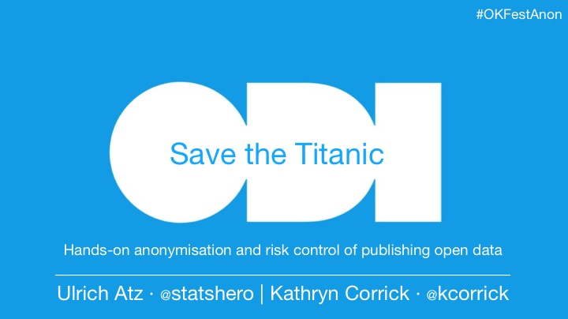
Anonymisation means that you cannot find ("identify") a single person in the data. Anonymisation can be difficult - we aim to give you more confidence when dealing with personal data. Instead of advanced legal and technical aspects, we consider pragmatic choices.
Titanic passenger data
The Titanic carried 1,309 passengers and the crew. Many of the passengers did not survive the disaster in 1912. Below is brief overview and here is the original source.
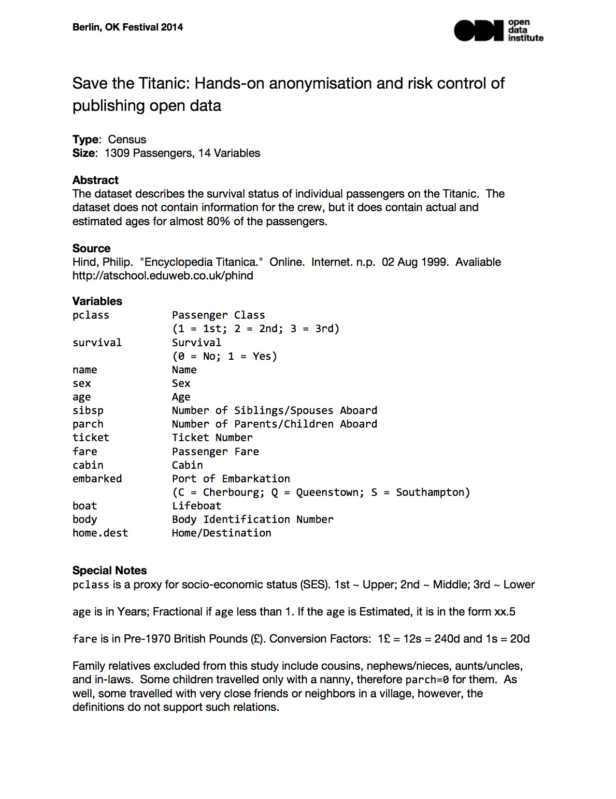
You can download the data or access it as a Google spreadsheets. For the latter, please make a copy and leave the original untouched.
The original is a CSV-file. CSV stands for comma-separated values and should look like this in an editor. If you open it in a spreadsheet it should have a tabular format, i.e. rows and columns. Each row is a passenger.
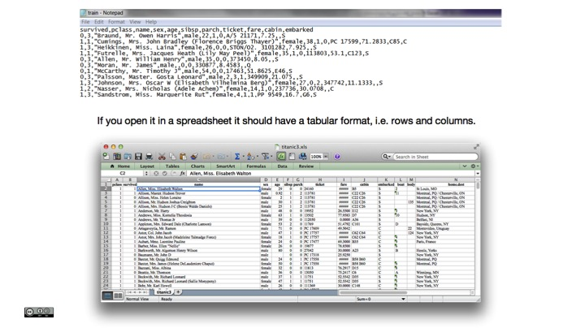
If you want to anonymise a dataset, it is crucial that you understand the data. In fact, know it inside out.
Two open data use cases
Start with the end in mind: what are people potentially doing with the data? This will guide your decisions of preserving or obscuring information on Titanic passengers. It will also help understand your audience and what happens next, once you have released the data.
For the Titanic passenger data we discuss two putative use cases. 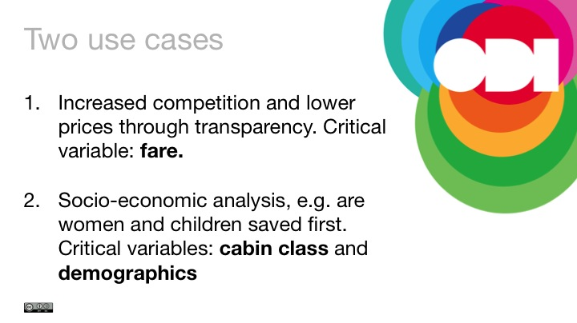
The trade-off between usefulness and protecting privacy
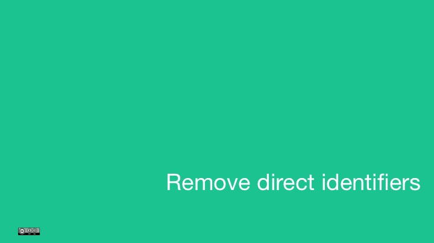
In our case removing direct identifier means deleting the name column. You may also omit other variables that are not really useful such as the ticket number. However deleting fare, for example, may be too much, considering its potential interest to the user.
What does it mean to be 'identified'?
An individual is identified if you have distinguished that individual from other members of a group. An unusual name may be enough.
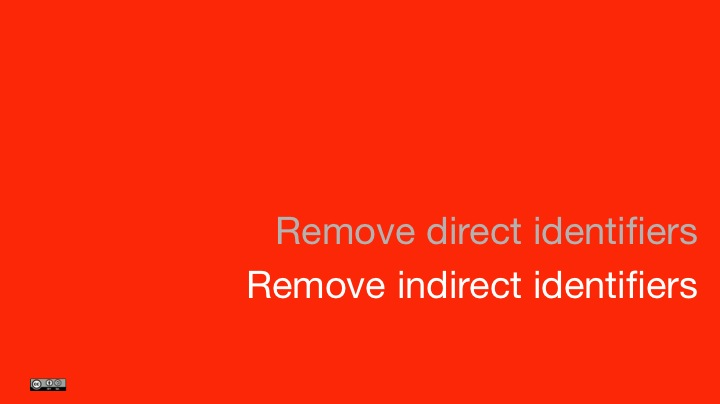
However, there are also indirect identifiers. The UK Anonymisation Network writes:
When a dataset is anonymised, the identifiers are removed, obscured, aggregated or altered to prevent identification. The term "identifiers" is often misunderstood to simply mean formal identifiers such as the name, address or, for example, the NHS number. But, identifiers could in principle include any piece of information; what is identifying will depend on context. For instance, if a group of individuals is known to contain only one woman, then the gender will be identifying for the woman (and gender is not a typical identifier). Identifiers can also be constructed out of combinations of attributes (for example, consider a "sixteen year old widow" or a "15 year old male University Student" or a "female Bangladeshi bank manager living in Thurso"). [adapted]
The most common variables that are not direct identifiers but carry a high risk:
- dates (e.g. birth, admission, discharge, ...)
- geolocators (e.g. post codes, spatial data)
- age
- unusual education (e.g. PhD in statistical disclosure control procedures)
- unusual occupation (e.g. organiser of the OK Festival).
Anonymising the Titanic passenger data
After inspecting the data, we discussed the following steps:
-
Grouping variables, for example
age, creating an age grouping that goes from 0-14, 15-24, 25-34, 35-44, 45-54, 55-64, and 65 and above. Another variable that may benefit from grouping ishome destination. -
Censoring the Number of Siblings/Spouses Aboard (
sibsp) at 4, i.e. recode 4, 5, 8 to "4 and more". -
Perturbing, i.e. adding some random noise, to the
farevariable (see below).
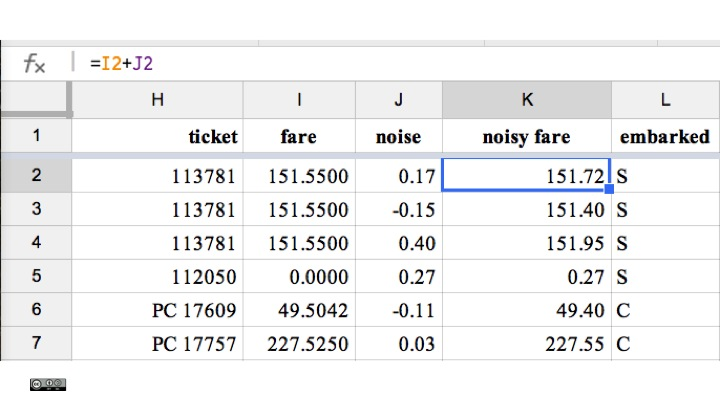
Further anonymisation methods
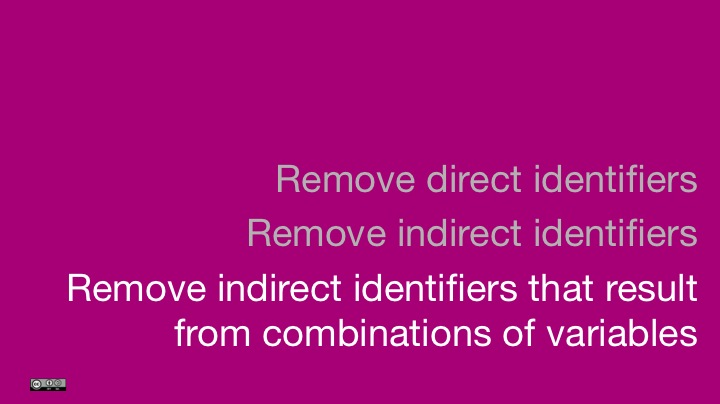
If a combination of variables leaves only one passenger, he or she might be identified. One practical way to inspect if there are risky combinations, that is low counts, are pivot tables. In Google spreadsheets you can create one over the following menu item. Other statistical software such as R has more advanced methods.
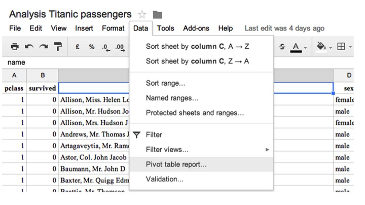
For a three-way cross-tabulation between survived, sex and passenger class pclass we see how there are only 5 women in the first class who did not survive the disaster. Combined with other information about family or husband this may be an identifying combination.
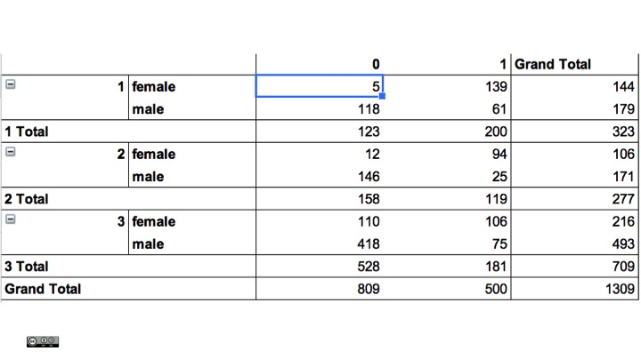
Other methods we discussed were:
- Sampling, which means instead of releasing 1309 rows, we only release a random sample. This is especially useful for large datasets, for example, energy consumption of millions of households.
- Local supression, some unique passengers, for example a family with three daughters, may stand out too much and we may decide to remove some data. This could mean omitting the passengers or just some information e.g. the number of siblings.
- Aggregate data, for example average fare by passenger class or a cross-table of survived, sex and a child indicator.
More information is in the ICO code of practice on anonymisation, available online.
Intruder testing
No anonymisation is complete without a test of whether it is possible to identify an individual. The ICO speaks of a motivated intruder test. There are many variations of this, but the basic question is what can a motivated intruder learn about an individual.
In general, there are two main ways for re-identification:
- An intruder takes personal data it already has and searches an anonymised dataset for a match.
- An intruder takes a record from an anonymised dataset and seeks a match in publicly available information.
Two scenarios for the Titanic passenger data
We constructed two scenarios:
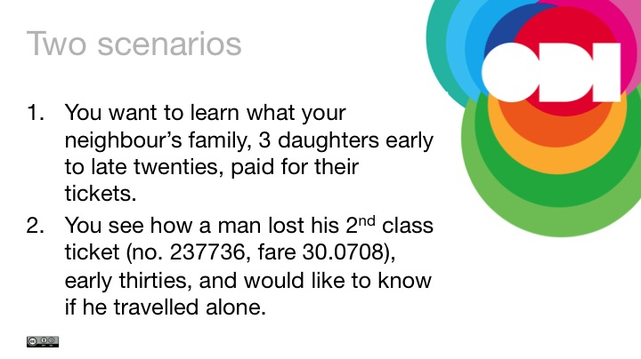
In the first scenario, some people were able to find the ticket price. (Send me an email if you have a guess.) In the limited time, our methods did not take into account some unique families on the ship.
In the second scenario anonymisation proved more successful because we had introduced a 'noisy fare'. However, there may still be some clever ways to get around it, at least for some passengers.
Remember: anonymisation is a trade-off between useful data and protecting privacy. We have to accept that the risk is bigger than zero.
Rules of thumbs
Anonymised data is exempt under the Data Protection Act 1998 (DPA). Moreover, the DPA recognises that the risk of anonymisation is never zero. Publishing anonymised data is not a disclosure of personal data.
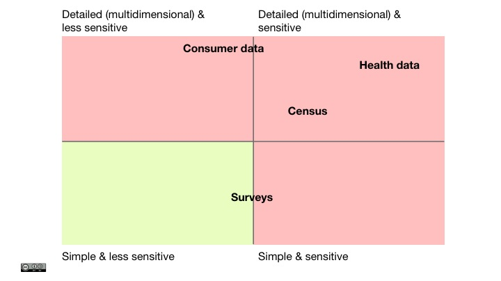
You have to assess the risk of anonymisation on a case-by-case basis. A useful place to start is to consider how complicated and how sensitive your information is; that is how much could a person be harmed by re-identification. We have provided a few examples on our chart as a suggestion.
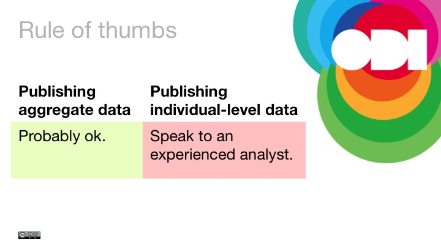
Aggregation, for example averages by region, is an effective method for mitigating the risk of publishing information about an individual. Data is shown as statistics or cross-tables. Crucial considerations for this anonymisation methods are around small numbers (low counts) and whether publishing multiple tables may be used for re-identification.
The Open Government Licence does not cover personal data. However, it can be used for anonymised data because it is no longer personal.
Further reading
- Shared data is not open data
- ICO (2012). Anonymisation: managing data protection risk, code of practice, available online.
- A Colloquial Definition of Big, Open, and Personal Data
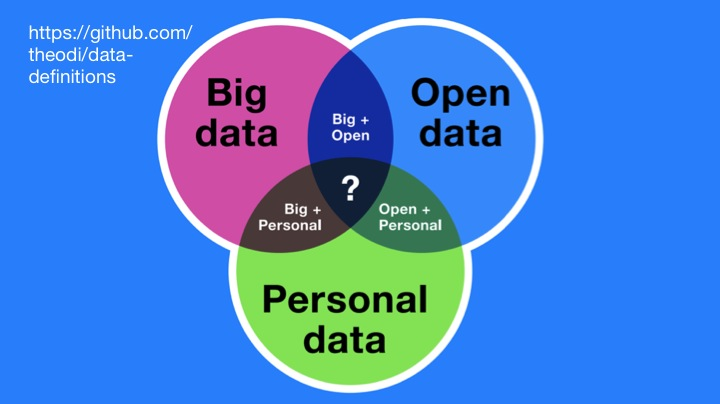